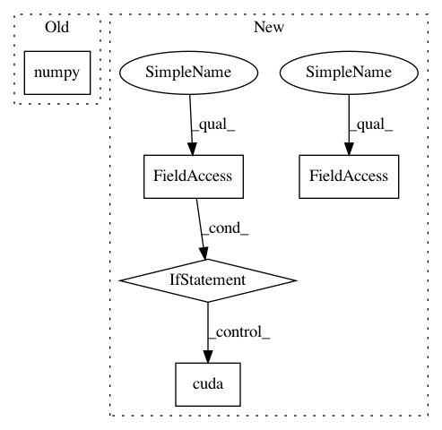

02e6d0538272f589d6c3c290b81575b7bd866991,server/synthesizer.py,Synthesizer,tts,#Synthesizer#Any#,155
Before Change
postnet_output, decoder_output, alignments)
if self.wavernn:
postnet_output = postnet_output[0].data.cpu().numpy()
wav = self.wavernn.generate(torch.FloatTensor(postnet_output.T).unsqueeze(0).cuda(), batched=self.config.is_wavernn_batched, target=11000, overlap=550)
else:
wav = inv_spectrogram(postnet_output, self.ap, self.tts_config)
// trim silence
After Change
postnet_output, decoder_output, _ = parse_outputs(
postnet_output, decoder_output, alignments)
if self.pwgan:
vocoder_input = torch.FloatTensor(postnet_output.T).unsqueeze(0)
if self.use_cuda:
vocoder_input.cuda()
wav = self.pwgan.inference(vocoder_input, hop_size=self.ap.hop_length)
if self.wavernn:
vocoder_input = torch.FloatTensor(postnet_output.T).unsqueeze(0)
if self.use_cuda:
vocoder_input.cuda()
In pattern: SUPERPATTERN
Frequency: 3
Non-data size: 5
Instances
Project Name: mozilla/TTS
Commit Name: 02e6d0538272f589d6c3c290b81575b7bd866991
Time: 2020-02-13
Author: reuben.morais@gmail.com
File Name: server/synthesizer.py
Class Name: Synthesizer
Method Name: tts
Project Name: mozilla/TTS
Commit Name: 02e6d0538272f589d6c3c290b81575b7bd866991
Time: 2020-02-13
Author: reuben.morais@gmail.com
File Name: server/synthesizer.py
Class Name: Synthesizer
Method Name: tts
Project Name: mozilla/TTS
Commit Name: 3b57e88a66ba1f410be70dbd2ad2899b5b1bcb0e
Time: 2020-02-19
Author: reuben.morais@gmail.com
File Name: server/synthesizer.py
Class Name: Synthesizer
Method Name: tts
Project Name: ClementPinard/FlowNetPytorch
Commit Name: c6a079c70368b41873f3288b05b74d38f74b6680
Time: 2018-03-30
Author: clement.pinard@parrot.com
File Name: run_inference.py
Class Name:
Method Name: main